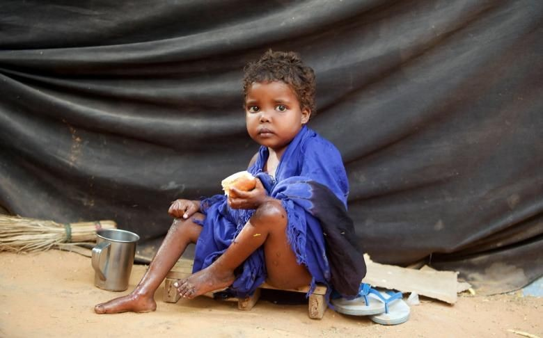
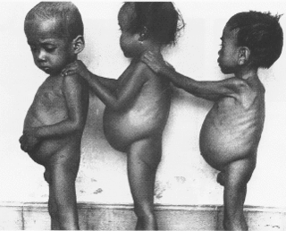
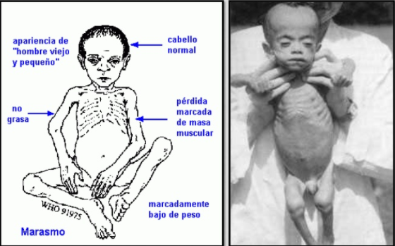
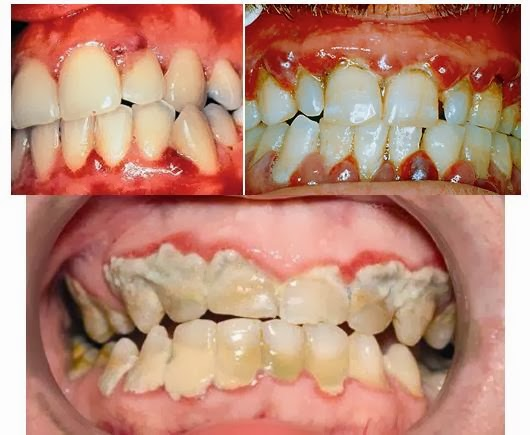
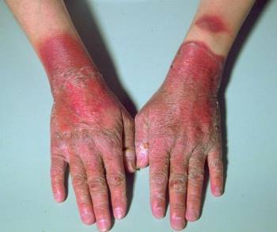
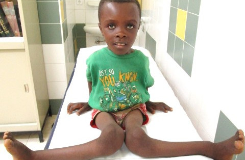

El hambre es una sensación física incómoda o dolorosa, causada por un consumo insuficiente de energía alimentaria. Se vuelve crónica cuando la persona no consume una cantidad suficiente de calorías (energía alimentaria) de forma regular para llevar una vida normal, activa y saludable.
Hoy en día, se estima que casi 690 millones de personas pasan hambre. Durante décadas, la FAO ha utilizado el indicador de prevalencia de la subalimentación para estimar el alcance del hambre en el mundo, por lo que el término “hambre” también suele denominarse subalimentación.

¿Qué es la inseguridad alimentaria?
Una persona padece inseguridad alimentaria cuando carece de acceso regular a suficientes alimentos inocuos y nutritivos para un crecimiento y desarrollo normales y para llevar una vida activa y saludable. Esto puede deberse a la falta de disponibilidad de alimentos y/o a la falta de recursos para obtenerlos. La inseguridad alimentaria puede experimentarse a diferentes niveles de severidad.
Enfermedades causadas por el hambre

SÍNDROME PLURICARENCIAL
Trastorno dietético grave observado en niños entre los 10 meses y los tres años, que se debe a una malnutrición que incluye una carencia de nutrientes vitales básicos. Estos niños siempre están hambrientos, y sus padres, en un intento de aliviar el hambre y de aportar las necesidades energéticas, les suministran grandes cantidades de hidratos de carbono que por sí solas tienen un valor nutricional bajo.
El trastorno se produce cuando el niño es destetado y, por consiguiente, privado del elevado valor nutricional y contenido proteico de la leche materna. También puede aparecer porque el apetito del niño esté afectado por otra enfermedad. Debido a que los anticuerpos están formados por proteínas, los niños con una ingesta proteica muy baja son más susceptibles a padecer infecciones y presentan una escasa resistencia frente a éstas.

MARASMO
Grave decaimiento somático y funcional del organismo provocado por una grave deficiencia de proteínas y de calorías. Es causado por un abandono prematuro del pecho de la madre como fuente de alimento y por infecciones intestinales, que se producen cuando el niño es alimentado con biberón en malas condiciones higiénicas.
Los efectos del marasmos son la falta de un aporte suficiente de proteínas y calorías en la primera infancia tiene consecuencias graves, pues las proteínas constituyen el principal material estructural del cuerpo, y son necesarias para la sintesis de anticuerpos contra las infecciones.

ESCORBUTO
Enfermedad causada por la falta de vitamina C. Aparece en los adultos tras una carencia alimenticia mayor de 6 meses.
Se caracteriza por astenia progresiva, inflamación de encías, caída de dientes, inflamación y dolor de articulaciones, fragilidad capilar. Con frecuencia también aparece la anemia como consecuencia de estas pequeñas hemorragias. La falta de vitamina C, bloquea la producción de sustancia intercelular para los tejidos conectivos,tejidos de soporte de las paredes de los vasos, del hueso, de la dentina, del cartílago.

PELAGRA
Enfermedad producida por deficiencia dietética debida a la ingesta o absorción inadecuada de niacina, uno de los compuestos del complejo de la vitamina B. La enfermedad afecta en especial a aquellas personas que siguen dietas pobres en proteínas, en especial cuando la dieta está basada en el maíz como alimento principal,
y en quienes padecen enfermedades gastrointestinales que originan una alteración de la absorción de vitaminas.
BERIBERI
Su nombre encierra los síntomas que encierra esta enfermedad, como es la inactividad creciente que llevará a la parálisis total.
El Beriberi es una enfermedad debida a la carencia de la vitamina B1 o Tiamina en la alimentación.

RAQUITISMO
Se produce cuando falta en el organismo la vitamina D, necesaria para fijar en el esqueleto el calcio y el fósforo que contienen algunos alimentos.
Esta enfermedad es conocida desde tiempos antiguos aunque se le considero como un trastorno del crecimiento de los huesos.
Al descubrirse la vitamina D se le consideró como enfermedad carencial en la mayoría de los casos.
El origen del raquitismo puede estar en un aporte insuficiente de vitamina D en la dieta o en una escasez de radiaciones ultravioletas solares.
El raquitismo puede conducir a deformidad esquelética, como la incurvación de la columna vertebral o de las piernas